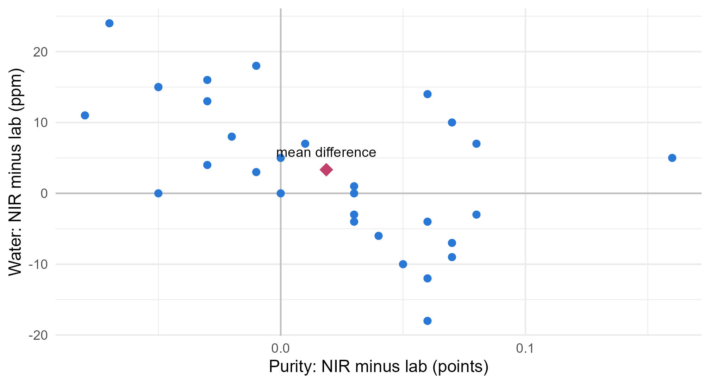
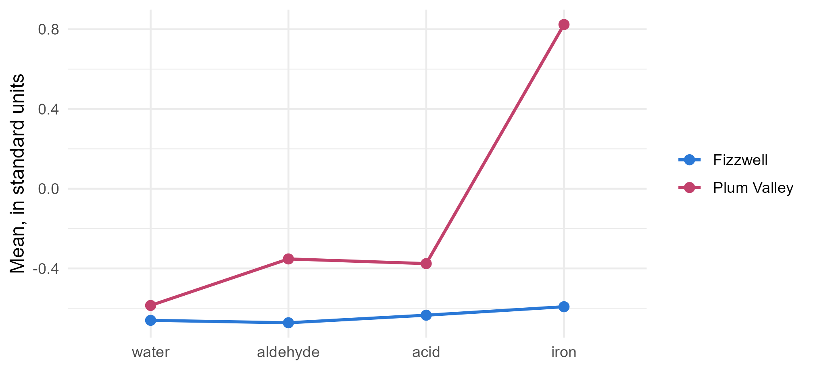

Module 3 · Lesson 5 of 13 Week 51 of 160 About 5–7 hours
Comparing two mean vectors
Paired measurements, two independent groups, and what to do when their spreads differ
Compare two multivariate means: paired comparisons with Hotelling’s T² on the differences, the two-sample T² test with a pooled covariance matrix, simultaneous intervals to find which variables differ, the unequal-covariance version, and profile plots.
Most comparisons in a plant come in two flavors. Sometimes the same items are measured twice, by two instruments, or before and after a change: that’s a paired comparison. Sometimes two different groups are compared, like the lots from two suppliers: that’s an independent-samples comparison. Lesson 0.13 did both with one variable at a time. This lesson does them with several variables at once, using Hotelling’s T^2, and both examples have a twist that one-at-a-time tests would miss or misread.
Two stories today: an online analyzer that might be fibbing, and two suppliers whose feed lots might be twins. Hotelling’s on the case again!
In this lesson you’ll:
- compare two sets of paired measurements with a T^2 test on the differences
- compare two independent groups with the two-sample T^2 test
- find which variables differ, with simultaneous intervals
- handle groups whose covariance matrices differ
- draw profile plots of two groups’ mean vectors
Paired comparisons: is the analyzer biased?
The plant’s online NIR analyzer reads the purity, water and acid of the product every few minutes, without waiting for the lab. For an audit, 30 samples were analyzed both ways:
pairs_data <- read_csv("data/analyzer_pairs.csv", show_col_types = FALSE)
head(pairs_data, 4)
#> # A tibble: 4 × 7
#> sample_id lab_purity nir_purity lab_water nir_water lab_acid nir_acid
#> <chr> <dbl> <dbl> <dbl> <dbl> <dbl> <dbl>
#> 1 N01 98.8 98.7 199 203 0.209 0.196
#> 2 N02 99.0 99.1 150 140 0.164 0.165
#> 3 N03 99.2 99.3 223 214 0.181 0.203
#> 4 N04 98.9 98.9 208 216 0.218 0.217Each sample’s two results belong together, so the right thing to analyze is the differences, NIR minus lab, one vector per sample. If the analyzer is unbiased, the mean difference vector is zero, so the question is a one-sample test of H_0: \boldsymbol\delta = \mathbf{0}, exactly last lesson’s T^2 with \boldsymbol\mu_0 = \mathbf{0}:
T^2 = n\,\bar{\mathbf{d}}^\top S_d^{-1}\,\bar{\mathbf{d}}, \qquad \frac{n - p}{p(n - 1)}\,T^2 \sim F_{p,\,n-p} .
Pairing removes the big sample-to-sample differences (the lab’s purities range over about 1.5 percentage points), so that only the analyzer’s errors remain. That’s what makes a paired comparison so much more sensitive than comparing two independent sets of measurements.
Your turn. Build the matrix of differences, NIR minus lab, and compute its mean vector.
The third column is nir_acid - lab_acid.
D <- with(pairs_data, cbind(purity = nir_purity - lab_purity,
water = nir_water - lab_water,
acid = nir_acid - lab_acid))
colMeans(D)On average, the NIR reads 0.019 points of purity higher than the lab, 3.3 ppm more water, and 0.002 more acid. Small differences, and all in the same direction.
Your turn. Test each difference on its own, with a paired t-test (a one-sample t-test of the differences).
Test the differences in column j: t.test(D[, j]).
D <- with(pairs_data, cbind(nir_purity - lab_purity, nir_water - lab_water, nir_acid - lab_acid))
sapply(1:3, function(j) t.test(D[, j])$p.value)0.072, 0.077 and 0.25. None is significant at 5%: on these tests, the audit would pass the analyzer.
Your turn. Now test all three differences at once with T^2.
Use the covariance matrix of the differences, cov(D).
D <- with(pairs_data, cbind(nir_purity - lab_purity, nir_water - lab_water, nir_acid - lab_acid))
n <- nrow(D); p <- ncol(D)
d_bar <- colMeans(D)
T2 <- n * t(d_bar) %*% solve(cov(D)) %*% d_bar
F_stat <- (n - p) / (p * (n - 1)) * T2
c(T2 = T2, p = pf(F_stat, p, n - p, lower.tail = FALSE))T^2 = 15.8, p = 0.0076. The analyzer is biased, and the joint test is sure of it.
Why is the joint test so much surer? Look at how the analyzer’s errors behave:
D <- with(pairs_data, tibble(purity = nir_purity - lab_purity, water = nir_water - lab_water))
ggplot(D, aes(x = purity, y = water)) +
geom_hline(yintercept = 0, color = "grey75") +
geom_vline(xintercept = 0, color = "grey75") +
geom_point(color = "#2a78d6", size = 2) +
geom_point(aes(x = mean(purity), y = mean(water)), color = "#C2416C", size = 4, shape = 18) +
annotate("text", x = mean(D$purity), y = mean(D$water), label = "mean difference", vjust = -1.3, size = 3.5) +
labs(x = "Purity: NIR minus lab (points)", y = "Water: NIR minus lab (ppm)") +
theme_minimal(base_size = 12)
#> Warning in geom_point(aes(x = mean(purity), y = mean(water)), color = "#C2416C", : All aesthetics have length 1, but the data has 30 rows.
#> ℹ Please consider using `annotate()` or provide this layer with data containing
#> a single row.
The NIR reads purity and water from overlapping bands of the same spectrum, so when it overestimates one, it tends to underestimate the other: its errors are negatively correlated (r = -0.55). The cloud of differences runs from top left to bottom right. The bias, though, pushes both readings up, which is the direction across the cloud, where the errors are smallest. In that direction, even a small shift stands out. The one-at-a-time tests can’t see it, because each of them looks along an axis, where the errors are large.
Two independent groups
Now the incoming feed lots. The lab measures every delivered lot for water, aldehyde, acid and iron:
feed <- read_csv("data/feed_lots.csv", show_col_types = FALSE)
feed |> group_by(supplier) |> summarise(lots = n(), across(water_ppm:iron_ppb, mean))
#> # A tibble: 4 × 6
#> supplier lots water_ppm aldehyde_ppm acid_mgKOH iron_ppb
#> <chr> <int> <dbl> <dbl> <dbl> <dbl>
#> 1 Fizzwell 16 191. 44.0 0.0986 30.7
#> 2 Kestrel 15 297 48.8 0.147 37.2
#> 3 Plum Valley 14 194. 47.6 0.105 43.0
#> 4 Rosewater 13 208. 68.5 0.111 32.8Kestrel’s lots are wet, as you know, and Rosewater’s carry aldehyde. Fizzwell and Plum Valley look like twins. Purchasing would like to know: is there any real difference between those two? That’s a comparison of two independent mean vectors, H_0: \boldsymbol\mu_1 = \boldsymbol\mu_2.
If the two suppliers’ lots have the same covariance matrix, it’s best estimated by pooling the two sample covariance matrices, as the pooled variance does in a two-sample t-test:
S_p = \frac{(n_1 - 1)S_1 + (n_2 - 1)S_2}{n_1 + n_2 - 2} .
The covariance matrix of the difference between the two sample means is then S_p\,(1/n_1 + 1/n_2), and the two-sample T^2 is
T^2 = (\bar{\mathbf{x}}_1 - \bar{\mathbf{x}}_2)^\top \left[ S_p \left( \tfrac{1}{n_1} + \tfrac{1}{n_2} \right) \right]^{-1} (\bar{\mathbf{x}}_1 - \bar{\mathbf{x}}_2), \qquad \frac{n_1 + n_2 - p - 1}{p\,(n_1 + n_2 - 2)}\,T^2 \sim F_{p,\ n_1 + n_2 - p - 1} .
The same test comes out of manova(), which the next lesson introduces: with two groups, its “Hotelling-Lawley” statistic is T^2/(n_1 + n_2 - 2), with the same F and p-value.
Your turn. The setup code has made X1 (Fizzwell’s 16 lots) and X2 (Plum Valley’s 14). Compute the pooled covariance matrix, the two-sample T^2 and its p-value.
The covariance of the difference of means is S_p(1/n_1 + 1/n_2).
n1 <- nrow(X1); n2 <- nrow(X2); p <- ncol(X1)
Sp <- ((n1 - 1) * cov(X1) + (n2 - 1) * cov(X2)) / (n1 + n2 - 2)
d <- colMeans(X1) - colMeans(X2)
T2 <- t(d) %*% solve(Sp * (1 / n1 + 1 / n2)) %*% d
F_stat <- (n1 + n2 - p - 1) / (p * (n1 + n2 - 2)) * T2
c(T2 = T2, p = pf(F_stat, p, n1 + n2 - p - 1, lower.tail = FALSE))T^2 = 24.3, F = 5.42 on 4 and 25 degrees of freedom, p = 0.0028. The twins aren’t identical.
Which variables differ?
After a significant joint test, the natural question is where the difference is. The simultaneous intervals from Lesson 4 carry over, with the two-sample multiplier
c = \sqrt{\frac{p\,(n_1 + n_2 - 2)}{n_1 + n_2 - p - 1}\,F_{p,\ n_1 + n_2 - p - 1}(0.95)}, \qquad (\bar{x}_{1j} - \bar{x}_{2j}) \pm c\,\sqrt{s_{p,jj}\left(\tfrac{1}{n_1} + \tfrac{1}{n_2}\right)} ,
and Bonferroni intervals use t_{n_1 + n_2 - 2}(\alpha/2p) instead of c. Here, c = 3.52 and the Bonferroni multiplier is 2.67.
A profile plot shows the two mean vectors side by side. Since the variables have different units, put each one in standard units first, here using the standard deviation of all 58 lots:
vars <- c("water_ppm", "aldehyde_ppm", "acid_mgKOH", "iron_ppb")
centers <- colMeans(feed[, vars]); spreads <- apply(feed[, vars], 2, sd)
feed |>
filter(supplier %in% c("Fizzwell", "Plum Valley")) |>
group_by(supplier) |>
summarise(across(all_of(vars), mean)) |>
tidyr::pivot_longer(-supplier, names_to = "property", values_to = "mean") |>
mutate(z = (mean - centers[property]) / spreads[property],
property = factor(sub("_.*", "", property), levels = c("water", "aldehyde", "acid", "iron"))) |>
ggplot(aes(x = property, y = z, color = supplier, group = supplier)) +
geom_line(linewidth = 0.9) +
geom_point(size = 2.5) +
scale_color_manual(values = c(Fizzwell = "#2a78d6", `Plum Valley` = "#C2416C")) +
labs(x = NULL, y = "Mean, in standard units", color = NULL) +
theme_minimal(base_size = 12)
The two profiles run close together on water, aldehyde and acid, then split apart on iron: Plum Valley’s lots carry about 12 ppb more. Profile plots are worth drawing for any multivariate comparison: Lesson 9 turns them into a formal analysis.
Your turn. Compute the simultaneous T^2 interval for the difference in mean iron, Fizzwell minus Plum Valley.
Multiply the standard error by the simultaneous multiplier, c_mult.
n1 <- nrow(X1); n2 <- nrow(X2); p <- ncol(X1)
Sp <- ((n1 - 1) * cov(X1) + (n2 - 1) * cov(X2)) / (n1 + n2 - 2)
c_mult <- sqrt(p * (n1 + n2 - 2) / (n1 + n2 - p - 1) * qf(0.95, p, n1 + n2 - p - 1))
d_iron <- mean(X1[, "iron_ppb"]) - mean(X2[, "iron_ppb"])
se_iron <- sqrt(Sp["iron_ppb", "iron_ppb"] * (1 / n1 + 1 / n2))
d_iron + c(-1, 1) * c_mult * se_ironFrom −23.6 to −1.0 ppb: Fizzwell’s lots carry less iron than Plum Valley’s, by somewhere between 1 and 24 ppb. The simultaneous intervals for the water, aldehyde and acid all contain zero. Iron is the difference, probably from Plum Valley’s older, steel-lined storage tanks.
When the covariance matrices differ
Pooling assumes that both groups have the same covariance matrix. When they clearly don’t, and especially when the group sizes differ too, the pooled T^2 can be misleading, as the pooled t-test can be in one dimension. The fix is the same as Welch’s t-test: don’t pool. Use each group’s own covariance matrix,
T^2 = (\bar{\mathbf{x}}_1 - \bar{\mathbf{x}}_2)^\top \left( \frac{S_1}{n_1} + \frac{S_2}{n_2} \right)^{-1} (\bar{\mathbf{x}}_1 - \bar{\mathbf{x}}_2) .
For large samples, this is approximately \chi^2_p. For smaller ones, there are F approximations with estimated degrees of freedom (Yao’s, and Nel and Van der Merwe’s), much like Welch’s.
How do you tell whether the covariance matrices differ? Look at the standard deviations and the correlations group by group. The formal test is Box’s M test (heplots::boxM()), which you’ll meet properly in the next lesson. It’s sensitive to non-normality, so treat it as a warning light rather than a verdict. For Fizzwell and Plum Valley, the spreads are similar (Box’s M p = 0.74), so pooling is fine. Kestrel would be another story: its water content varies twice as much as anyone else’s.
Your turn. Compute the unpooled T^2 for Fizzwell against Plum Valley, and its large-sample chi-square p-value.
Divide the second covariance matrix by its own group size, nrow(X2).
d <- colMeans(X1) - colMeans(X2)
S_unpooled <- cov(X1) / nrow(X1) + cov(X2) / nrow(X2)
T2 <- t(d) %*% solve(S_unpooled) %*% d
c(T2 = T2, p = pchisq(T2, df = 4, lower.tail = FALSE))T^2 = 23.1, close to the pooled 24.3, since the two covariance matrices are similar. The chi-square p-value, 0.0001, is smaller than the pooled F test’s 0.0028, but don’t read anything into that: with only 14 and 16 lots, the chi-square approximation is too optimistic, and the F version is the one to trust.
Challenge round
Challenge 1 · The analyzer’s bias direction. As in Lesson 4, the combination that differs most is \mathbf{a} = S_d^{-1}\bar{\mathbf{d}}. Compute it, and scale each weight by its variable’s standard deviation to compare them.
Scale by the standard deviations of the differences: diag(cov(D)).
D <- with(pairs_data, cbind(purity = nir_purity - lab_purity, water = nir_water - lab_water, acid = nir_acid - lab_acid))
a <- solve(cov(D)) %*% colMeans(D)
scaled <- a * sqrt(diag(cov(D)))
round(scaled[, 1] / max(abs(scaled)), 2)1.00 for the purity, 0.99 for the water, 0.21 for the acid: the bias shows up as “purity and water both read high”, the combination that the analyzer’s negatively correlated errors rarely produce on their own. A sensible next step for the plant: recalibrate the NIR’s purity and water models together, against a fresh set of lab samples.
Challenge 2 · Do the spreads differ? Run Box’s M test for Fizzwell against Plum Valley, and for Fizzwell against Kestrel.
The second group is Kestrel’s lots, X3.
X3 <- as.matrix(filter(feed, supplier == "Kestrel")[, vars])
p_pv <- heplots::boxM(rbind(X1, X2), rep(c("Fizzwell", "Plum Valley"), c(nrow(X1), nrow(X2))))$p.value
p_k <- heplots::boxM(rbind(X1, X3), rep(c("Fizzwell", "Kestrel"), c(nrow(X1), nrow(X3))))$p.value
c(plum_valley = unname(p_pv), kestrel = unname(p_k))p = 0.74 for Plum Valley, and p = 0.0009 for Kestrel, whose water varies with a standard deviation of 29 ppm against Fizzwell’s 14. Comparing Fizzwell with Kestrel, you’d use the unpooled T^2 (not that it would matter much here: their water contents differ by 100 ppm).
Quick quiz
1. Thirty samples are each analyzed by two instruments. How should you compare the instruments?
The measurements are paired, so analyze the differences. That removes the sample-to-sample variation.
2. The analyzer’s three paired t-tests had p-values of 0.07, 0.08 and 0.25, but the paired T^2 gave 0.0076. Why?
T^2 looks in every direction, and finds the one where the shift is largest compared with the noise.
3. What does the two-sample T^2 test assume about the two groups’ covariance matrices?
The pooled S_p is a weighted average of the two. When they clearly differ, use the unpooled version, S_1/n_1 + S_2/n_2.
4. After a significant two-sample T^2 test, how do you find which variables differ?
Simultaneous intervals keep the overall error rate at 5%. Here, only the iron’s interval excluded zero.
5. What’s a profile plot?
It shows at a glance where two mean vectors agree and where they part, as on iron here.
6. With two groups, how is the two-sample T^2 related to manova()?
MANOVA generalizes the two-sample T^2 to more than two groups, in the next lesson.
Wrap-up
You can now compare two mean vectors, paired or independent! Here’s what you’ve learned:
- Paired data: analyze the differences with a one-sample T^2 against zero. The NIR analyzer passed three t-tests but failed the joint test (p = 0.0076), because its bias goes across its error structure.
- Two independent groups: the two-sample T^2 with the pooled covariance S_p, and \frac{n_1+n_2-p-1}{p(n_1+n_2-2)}T^2 \sim F_{p,\,n_1+n_2-p-1}. Fizzwell and Plum Valley differ (p = 0.0028).
- Where they differ: simultaneous T^2 or Bonferroni intervals, and a profile plot. The difference is in iron.
- Unequal covariances: use S_1/n_1 + S_2/n_2, with a chi-square approximation for large samples. Box’s M test is a warning light: Kestrel’s spreads differ from the others’.
- The direction of a difference is S^{-1} times the mean difference, the combination with the largest t^2.
TipPractice in RStudio (optional, about an hour)
Download analyzer_pairs.csv and feed_lots.csv into your project’s data-raw/ folder.
- The wrong analysis. Compare the NIR and lab results as if they were two independent groups of 30 samples, with the two-sample T^2. What p-value do you get, and why is it so much larger than the paired one?
- manova() for two groups. Run
summary(manova(cbind(water_ppm, aldehyde_ppm, acid_mgKOH, iron_ppb) ~ supplier, data = filter(feed, supplier %in% c("Fizzwell", "Plum Valley"))), test = "Hotelling-Lawley"), and check the F statistic against your T^2. - A Bland-Altman plot. For each property, plot the NIR-minus-lab difference against the average of the two readings. It’s the standard way chemists compare two measurement methods. Is the bias constant across the range?
- Kestrel against Fizzwell. Compute both the pooled and the unpooled T^2 for Kestrel against Fizzwell, and their simultaneous intervals. Which properties differ, besides the water?
NoteKey words from this lesson
- Paired comparison
- A comparison of two measurements on the same units, analyzed through their differences.
- Two-sample T^2 test
- A test of whether two independent groups have the same mean vector, using the pooled covariance matrix.
- Pooled covariance matrix
- S_p = [(n_1-1)S_1 + (n_2-1)S_2]/(n_1+n_2-2), the combined estimate of a covariance matrix that two groups share.
- Unpooled (Behrens-Fisher) T^2
- A two-sample T^2 that uses S_1/n_1 + S_2/n_2, for groups with different covariance matrices.
- Box’s M test
- A test of whether several groups share the same covariance matrix. It’s sensitive to non-normality.
- Profile plot
- A plot of the groups’ mean vectors, one line per group, across the variables.
NoteWant to read more?
- Penn State STAT 505, Lesson 7: Inferences Regarding Multivariate Population Mean, sections 7.1.6 to 7.1.15 (paired and two-sample tests) and 7.2.4 to 7.2.8 (intervals, profile plots and unequal covariance matrices).
- Johnson and Wichern, Applied Multivariate Statistical Analysis, chapter 6, sections 6.1 to 6.3. Paired comparisons and the comparison of two mean vectors.
- J. Martin Bland and Douglas Altman, “Statistical methods for assessing agreement between two methods of clinical measurement”, The Lancet (1986). The classic on comparing two measurement methods, just as useful in a chemistry lab.